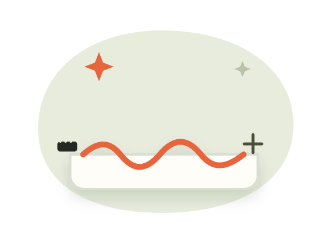
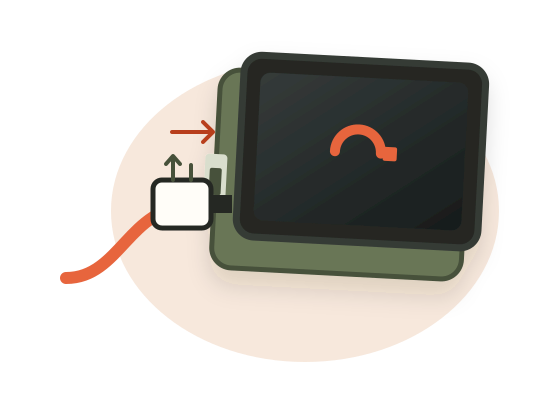
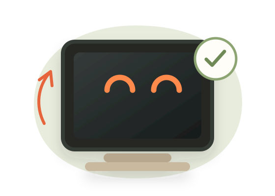
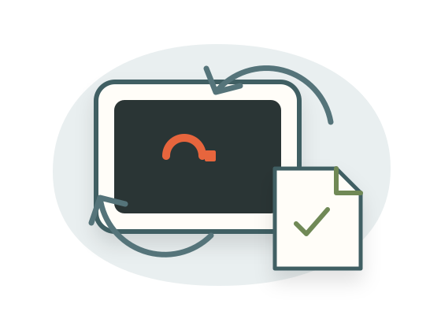

No devices yet
An empty place and unplugged cable—never a fabricated device.
AMPVE · E40 ASSET REVIEW
Four truthful illustrations and one restrained motion grammar for onboarding, empty, success and recovery states.

An empty place and unplugged cable—never a fabricated device.

The cable approaches the programming port; selection alone is not success.

Reserved for a confirmed completion result, not assumed peripheral validation.

Calm blue-grey language, saved-file cue and explicit circular recovery path.